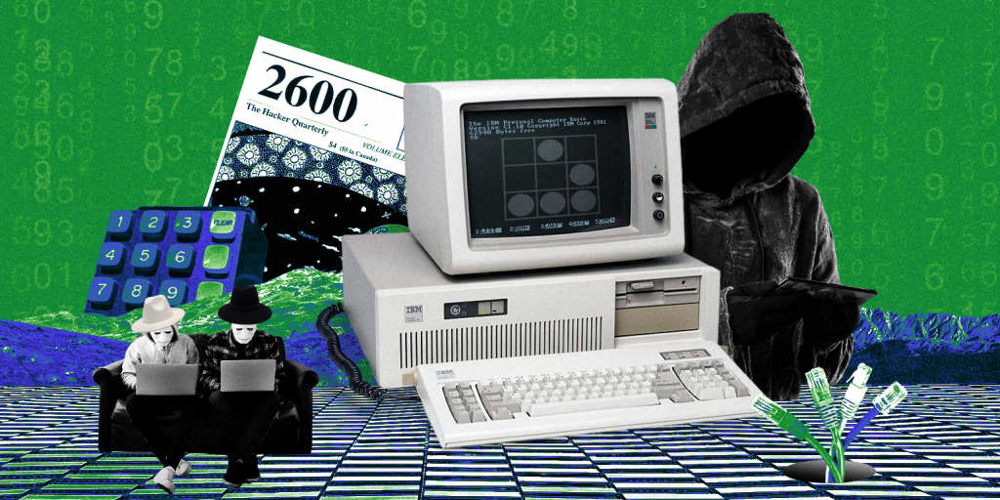

История развития хакерства до начала 2000-х годов
История мирового хакерства начинается в 1960-х годах, когда студенты Массачусетского технологического института (MIT) начали экспериментировать с компьютерными программами. Именно тогда термин «хак» приобрел новое значение. Некоторые члены этой группы, движимые любопытством, начали изучать новый университетский компьютер, манипулируя его программным обеспечением. В 1970-е годы появились телефонные фрикеры. Они взламывали телефонные сети, как местные, так и международные, чтобы совершать бесплатные звонки. Отцом этого движения считается Джон Дрейпер, ветеран войны во Вьетнаме, известный как Cap'n Crunch. Он обнаружил, что свисток-игрушка, найденный в коробке с овсяными хлопьями Cap'n Crunch, издает звук частотой 2600 Гц, соответствующей частоте электрического сигнала доступа к междугородной телефонной сети AT&T. Он построил первую “голубую коробку” Blue Box со свистком внутри, который свистел в микрофон телефона, позволяя делать бесплатные звонки. Вскоре журнал Esquire опубликовал статью под названием "Секреты маленькой голубой коробки" с инструкциями по ее использованию. Это привело к волне мошенничества с телефонными сетями в США. Производством и продажей "голубых коробок" занимались друзья по колледжу Стив Возняк и Стив Джобс, которые впоследствии основали Apple Computer.
В 1980-е годы
появились хакерские доски объявлений и сообщества хакеров. Телефонные фрикеры начали заниматься компьютерным хакерством, и появились первые системы электронных досок объявлений (BBS), предшественники групп новостей Usenet и электронной почты. BBS с названиями, такими как "Sherwood Forest" и "Catch-22", стали местами встреч хакеров и фрикеров, где они обменивались опытом по краже паролей и номеров кредитных карт. Начали формироваться хакерские группы, такие как "Legion of Doom" в США и "Chaos Computer Club" в Германии.В 1983 году
вышел фильм "Военные игры" ("War Games"), который представил широкой публике явление хакерства. Главный герой, хакер, проникает в компьютер компании-производителя видеоигр, который оказывается боевым симулятором ядерного конфликта, принадлежащим военным. Это создает реальную угрозу ядерной войны, и военные переходят в режим "Def Con 1" (Defense Condition 1 - высшая степень боевой готовности). Начал формироваться образ хакера-кибергероя (и антигероя). В том же году были арестованы 6 подростков, называвших себя "бандой 414". За 9 дней они взломали 60 компьютеров, включая компьютеры Лос-Аламосской лаборатории ядерных исследований.В 1984 году
начал регулярно издаваться хакерский журнал "2600". Редактор Эммануил Голдштейн (настоящее имя Эрик Корли) взял псевдоним от имени главного героя романа Джорджа Оруэлла "1984". Название журналу было дано в честь свистка первого фрикера Cap'n Crunch, частота которого составляла 2600 Гц. Журнал "2600", а также онлайн-журнал "Phrack", выпущенный годом ранее, публиковали обзоры и советы для хакеров и фрикеров. Сегодня "2600" продается в крупных и уважаемых книжных магазинах.В 1986 году
взлом компьютеров был признан преступлением. Обеспокоенный ростом числа взломов корпоративных и государственных компьютеров, Конгресс США принял "Закон о компьютерном мошенничестве и злоупотреблениях", который признал взлом компьютеров преступлением. Однако он не распространялся на несовершеннолетних.В 1988 году
произошел инцидент с червем Морриса, который нанес первый значительный ущерб от вредоносной программы. Саморазмножающаяся программа, созданная студентом Корнельского университета Робертом Моррисом, вывела из строя около 6000 университетских и правительственных компьютеров по всей Америке, причинив огромный ущерб. Моррис, сын директора по науке одного из подразделений Агентства национальной безопасности, был исключен из университета, приговорен к 3 годам условного срока и штрафу в размере 10 000 долларов. Он утверждал, что написал программу с целью изучения распространения информации в UNIX-среде сети ARPAnet, прародительнице Интернета.В 1989 году
произошла первая история с кибершпионажем. Хакеры из ФРГ, имевшие тесные связи с Chaos Computer Club, проникли в правительственные компьютеры США и продали полученные данные КГБ. Хакеры были арестованы, приговорены к условным срокам и штрафам.В 1990 году
в 14 городах США прошла массовая облава на хакеров, обвиняемых в краже номеров кредитных карт и взломе телефонных сетей. Арестованные активно давали показания друг на друга в обмен на судебный иммунитет. Это нанесло сильный удар по хакерским сообществам.В 1993 году
в Лас-Вегасе состоялся первый Def Con - крупнейший ежегодный съезд хакеров. Изначально Def Con задумывался как одноразовая встреча, посвященная прощанию с BBS, но впоследствии стал ежегодным мероприятием. Во время викторины с розыгрышем автомобилей в прямом эфире на радиостанции хакер в бегах Кевин Паулсен и двое его друзей заблокировали телефонную сеть, обеспечив прохождение звонков только от них. Таким образом, они выиграли два автомобиля "Порше", туристические поездки и 20 000 долларов.В 1994 году
хакерские утилиты переместились на веб-сайты. Появление браузера Netscape Navigator сделало веб более удобным для просмотра и хранения информации, чем BBS. Хакеры перенесли свои программы, утилиты, советы и технологии с досок объявлений на веб-сайты, сделав их общедоступными.В 1995 году
были арестованы Кевин Митник и Владимир Левин. Главный серийный киберпреступник, неуловимый Кевин Митник, был наконец пойман ФБР. Судебные разбирательства длились 4 года, и все это время Митник находился в тюрьме. Пресса создала из него легенду. В марте 1999 года суд вынес обвинительный приговор, который поглотил уже отбытый срок. Митника выпустили, запретив заниматься некоторыми видами деятельности. Российский хакер Владимир Левин украл из американского Citibank 10 миллионов долларов. Он был пойман и передан США, где его приговорили к 3 годам тюремного заключения. Были возвращены все похищенные средства, за исключением 400 000 долларов.В 1997 году
произошли взломы AOL. Свободно распространяемая хакерская программа под названием "AOHell" ("America-On-Hell") стала кошмаром для America Online, крупнейшего интернет-провайдера. С ее помощью даже неопытный пользователь мог отправлять многомегабайтные почтовые бомбы в e-mail-сервисы AOL и обрушивать потоки спама в чатах. Такие программы способствовали появлению сообществ неквалифицированных хакеров, или "скриптовых детишек" (script kiddies), которым хватало ума только на то, чтобы использовать чужие хакерские утилиты. В том году сотни тысяч пользователей AOL стали жертвами спам-бомбардировок.В 1998 году
хакерская команда "Культ мертвой коровы" (Cult of the Dead Cow) создала программу "Back Orifice" ("Черный ход") для взлома Windows 95/98. Это мощное средство захвата контроля над удаленной машиной с помощью троянской утилиты. Программа была представлена на съезде Def Con. Во время обострения ситуации в Персидском заливе десятки компьютерных систем, принадлежащих Пентагону, подверглись хакерской атаке. Заместитель министра обороны Джон Хэмр назвал эту атаку самой хорошо организованной и методичной из всех, которым когда-либо подвергались военные компьютеры США. Американское командование заподозрило в атаке Ирак, полагая, что целью было помешать высадке американских войск в Персидском заливе. Однако, за атакой стояли не иракцы, а два израильских подростка. Главным был 19-летний Эхуд Тенебаум, известный под именем "The Analyzer". Оба были арестованы и обвинены в компьютерном взломе, совершенном по предварительному сговору. Сейчас Тенебаум работает главным техническим специалистом в компьютерно-консалтинговой фирме. После ядерных испытаний Индии и Пакистана международная группа хакеров-пацифистов взломала их ядерные центры, похитила и опубликовала мегабайты закрытой информации.В 2000 году
получили распространение распределенные атаки типа "Отказ от обслуживания" (denial-of-service или DDoS-атаки). Под их натиском пали крупнейшие сайты, такие как eBay, Yahoo!, CNN.com, Amazon и другие. Неизвестные хакеры похитили из корпоративной сети Microsoft и опубликовали исходные коды последних версий Windows и Office.В 2001 году
DNS-серверы Microsoft подверглись масштабному взлому. Корпорация проявила удивительную нерасторопность, и многие ее сайты оставались недоступными для миллионов пользователей от нескольких часов до двух суток.В 2001 году
30 стран, включая США, подписали «Конвенцию о киберпреступлениях», которая установила общие методы борьбы с нарушителями закона в Сети для стран-участников. Конвенция определила уголовные и гражданско-правовые санкции за хакерство, нарушение авторских прав и др. Договор также включал меры предосторожности, введенные в связи с терактами 11 сентября в США, предоставляя странам-участникам равные права для контроля информации о подозреваемых в терроризме, передаваемой через Интернет.
